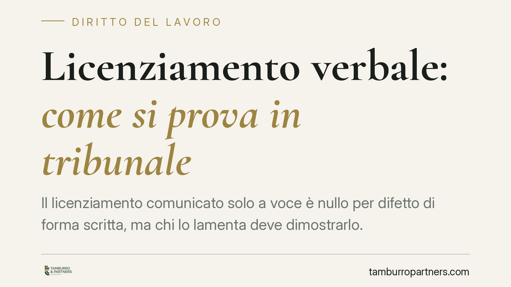

Licenziamento verbale: come si prova in tribunale
Il licenziamento comunicato solo a voce è nullo per difetto di forma scritta, ma chi lo lamenta deve dimostrarlo. Una recente ordinanza della Cassazione ribadisce che l'onere grava sul lavoratore: la sola interruzione del lavoro non basta e, in presenza di contribuzione regolare, la domanda può essere respinta.

Il caso
Un lavoratore sostiene di essere stato allontanato con un licenziamento comunicato a voce. Il datore nega: non c'è stato alcun recesso, l'interruzione dell'attività dipende da altre ragioni. In giudizio, il nodo non è se il licenziamento orale sia o meno valido — non lo è — ma se quel licenziamento sia davvero avvenuto.
La Corte di Cassazione, con una recente ordinanza, ha confermato un principio consolidato: provare l'esistenza del licenziamento verbale spetta integralmente a chi lo invoca. La semplice cessazione della prestazione lavorativa non dimostra nulla, perché può derivare da dimissioni, assenze o da una controversia ancora aperta. Dove il dubbio resta e il datore risulta in regola con i versamenti contributivi, la domanda del lavoratore va rigettata.
Inquadramento normativo
Il licenziamento intimato senza forma scritta è inefficace: l'art. 2, comma 1, della Legge n. 604/1966 impone la comunicazione per iscritto, a pena di nullità. Chi riceve un recesso solo verbale si trova quindi di fronte a un atto privo di effetti, con tutele conservative del posto di lavoro.
Attenzione però al passaggio logico: prima della disciplina sulla forma viene la prova del fatto. Qui opera l'art. 2697 del Codice civile, secondo cui chi vuol far valere un diritto in giudizio deve provare i fatti che ne costituiscono il fondamento. Il fatto costitutivo, qui, è il licenziamento stesso. Non la sua forma, ma la sua esistenza.
L'art. 421 del Codice di procedura civile consente al giudice del lavoro di disporre d'ufficio mezzi di prova, anche oltre i limiti ordinari. Si tratta però di un potere integrativo, non sostitutivo: non supplisce a un impianto probatorio del tutto assente. Se il lavoratore non offre elementi, il giudice non è tenuto a costruirli al suo posto.
Perché la contribuzione regolare pesa
La regolarità dei versamenti previdenziali gioca a sfavore della tesi del licenziamento. Un datore che continua a versare i contributi tiene un comportamento difficilmente compatibile con la volontà di estromettere il dipendente. Non è una prova decisiva in sé, ma è un indizio che il giudice valuta e che, in assenza di elementi di segno contrario, orienta la decisione verso il rigetto.
Implicazioni pratiche
Per chi lamenta un licenziamento verbale cambia la prospettiva operativa. La questione non è dimostrare che un recesso orale è illegittimo — lo è per definizione — ma costruire la prova che quel recesso c'è stato. Testimoni, messaggi, comportamenti del datore successivi all'allontanamento diventano gli elementi su cui si gioca l'esito.
Va chiarito un punto spesso frainteso sui termini. Il licenziamento orale è nullo per difetto di forma scritta: la giurisprudenza consolidata esclude che la relativa tutela sia soggetta al termine di decadenza di sessanta giorni previsto dall'art. 6 della Legge n. 604/1966 per i licenziamenti formalizzati. Si applica invece la prescrizione ordinaria. Questo non significa che convenga attendere: più tempo passa, più la prova si deteriora e gli indizi a favore del lavoratore si indeboliscono.
Cosa fare in concreto
- Documentare subito l'accaduto. Annotare data, luogo, parole usate e persone presenti al momento del presunto licenziamento, finché il ricordo è preciso.
- Formalizzare per iscritto. Inviare al datore una PEC o una raccomandata A/R in cui si contesta il licenziamento verbale e si dichiara la propria disponibilità a riprendere servizio: la risposta, o il silenzio, diventa materiale probatorio.
- Raccogliere gli indizi. Conservare messaggi, email, chat, eventuali comunicazioni di colleghi o testimoni che collochino nel tempo l'estromissione.
- Richiedere l'estratto conto previdenziale. Verificare l'andamento dei versamenti contributivi: un'interruzione coerente con la data del licenziamento sostiene la tesi del lavoratore.
- Valutare la solidità del quadro prima di agire. Prima di promuovere la causa è opportuno misurare la consistenza degli elementi disponibili, perché l'onere della prova non ammette lacune.
La differenza, in giudizio, non la fa l'accaduto, ma ciò che si riesce a dimostrare.
---
Contributo informativo a cura di Tamburro & Partners – Avv. Giuseppe Tamburro. Non costituisce parere legale.
Ogni storia di lavoro ha i suoi tempi.
Se gestisci HR e vuoi un confronto su contenzioso, ispezioni o licenziamenti, scrivi allo studio. Ti rispondiamo entro un giorno lavorativo.